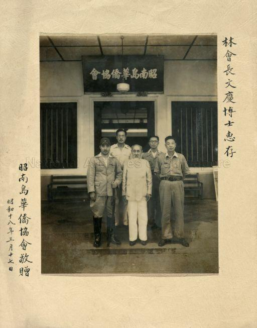

Mamoru Shinozaki: The Guy Who Did Not Follow the Script
February 1908 – 1991

Yes, a Japanese. Contrary to popular belief perhaps, not all Japanese were evil, but just following orders to protect their own lives. A little controversial… So let's zoom in on both sides of the coin.
In pre-Japanese Singapore, Shinozaki was initially just tasked to provide updates for Japanese newspapers in Singapore, then later asked to report to the Japanese government on local conditions and British military defence. As their good little puppet, he socialised with British servicemen stationed in Singapore, often organising parties for them at his residence on Wareham Road. Frat boy house parties in the 1900s? However, this did not fool the British as Shinozaki’s close contact with the servicemen, coupled with the heightened British concern over Japanese presence in Singapore at the time, built the case for the Special Branch (today’s Internal Security Department) to place Shinozaki under surveillance from July 1940. A whole ISD just for a man.
Soon enough, on 21 September 1940, Shinozaki was arrested by the Special Branch. The breaking point? Earlier that month, Shinozaki had led two Japanese military officers to various locations in Singapore, Malacca and parts of Johor on a little field trip to survey military installations and study the British defence capability.
As such, Shinozaki was found guilty on two charges: soliciting military information from a British Army serviceman that would be useful to a foreign power; and collecting information regarding troop movements that would be prejudicial to the interests of the British Empire. He was sentenced to 3.5 years of imprisonment and a $1,000 fine, or an additional six months’ simple imprisonment.
A classic fairytale villain, but cue his character development, turned over a new leaf trope.
After the British surrendered Singapore to the Japanese on 15 February 1942, Shinozaki was released from Changi prison and appointed as the adviser of Defence Headquarters, a rank equivalent to lieutenant colonel. One of his tasks included issuing protection cards, which granted protection from the Japanese, and were only meant for Japanese collaborators and foreign diplomats only.
Soon after Shinozaki assumed this position, the Japanese military launched the Sook Ching operation on 18 February 1942, to identify and brutally eliminate suspected anti-Japanese elements among the local communities, particularly the Chinese and Eurasians.

During the Sook Ching war crimes, Shinozaki testified that he had issued 20,000 to 30,000 good citizen cards, aka protection cards, and personally rescued about 2,000 detainees from the Sook Ching concentration camps.
He claimed, “I didn’t care if a person was good or bad or whether he was a communist. To anybody who came and asked for a pass, I gave one.”
According to Shinozaki, both locals and foreigners frequently turned to him for help. Among them was French Roman Catholic Bishop, Adrien Devals, who appealed to him to secure the release of detainees, particularly women and children.
Stepping up beyond his role, Shinozaki defied his own country's military by rushing to detention centres and using his authority to overrule Kempeitai officers, securing the release of countless civilians. With his efforts, around 2,000 detainees were released from concentration camps, many of whom later went on to become influential figures in Singapore, including Mr. Lim Boon Keng. Lim was not just a mere beneficiary of Shinozaki’s kindness. Following Lim’s release, the two met at the Toyo Hotel, where Shinozaki actually convinced him to act as the leader of the Chinese community and initiated the idea of forming a Chinese organisation together. On the surface, the organisation would appear to serve as a support for the Japanese military authorities, but its real objective would be to protect the Chinese community and secure the release of prominent Chinese leaders held by the Japanese military. To tangibilise this idea, he persuaded Major-General Manaki, the Japanese chief military administrator in Singapore, to approve the proposal. He then persuaded the Kempeitai to release prominent Chinese leaders, for them to join the organisation. As such, The Oversea Chinese Organisation (OCA) was established.
In March 1942, Shinozaki was ‘promoted’ and appointed chief officer of education in the Education Department. His immediate tasks were to reopen schools and reorganise teaching staff. In an interview, Herman Marie De Souza, who had worked with Shinozaki in the Education Department, recalled that Shinozaki often negotiated with the Military Administration for the teachers.
A notable example, Shinozaki managed to secure the release of school buildings that were occupied by the military.
Later on in August 1942, Shinozaki was appointed as the chief welfare officer. Among his duties were to manage locals’ complaints, promote employment for locals and establish a labour office. During his tenure, Shinozaki also helped set up the Eurasian Welfare Association (EWA), which represented the Eurasian community to the Japanese administration.
In a postwar interview, a sister who managed the Little Sisters of the Poor Home on Thomson Road during the war said that Shinozaki ensured steady food supply to the home. Shinozaki also helped to find medical treatment for Lady Lucy Thomas, wife of former British governor Shenton Thomas, when she was ill.
In 1943, due to food shortages in Singapore, the Japanese administration introduced resettlement schemes to relocate people to farming communities outside Singapore in order to reduce the local population. This led to the establishment of the Endau and Bahau settlements in peninsular Malaya. Shinozaki was tasked to lead the resettlement projects, in which he approached the OCA to carry out the relocation of Chinese people to Endau, Johor.
In persuading the OCA to agree to the resettlement plans, he promised that the new settlement would offer freedom to residents because it would be run entirely by the OCA without the presence of military authorities. Almost like a non-Japanese-occupied territory. As such, In November 1943, the OCA formed 10 bureaus to oversee the new settlement, and the first batch of settlers moved into Endau in February 1944. Endau flourished rapidly, thanks to factors such as its prime location of favourable farming conditions, which were handpicked by OCA and Shinozaki.
Emboldened by the success of Endau and the prospect of escaping from the surveillance of the Kempeitai in Singapore, Bishop Devals and the EWA, decided to take up Shinozaki’s offer to set up another settlement in Bahau, Negri Sembilan. The Bahau settlement would host Eurasian and Chinese Roman Catholics, with the first batch of settlers leaving for the new settlement at the end of 1943.
Unlike Endau, however, the location of Bahau was not successful as an agricultural settlement due to the soil quality and its susceptibility to malaria. Coupled with the lack of financial backing and farming experience of the Eurasian settlers, Bahau encountered many problems including disease and malnourishment.
As such, Shinozaki provided the residents with basic necessities such as rice and medical supplies, however, the supplies were only inadequate. The harsh living conditions, and perhaps regret of the settlers in their decision to move, eventually bred animosity between Shinozaki and the settlers.
According to Philip Carlyle Marcus, a Bahau resident, Bishop Devals once argued with Shinozaki, with the former accusing Shinozaki of not providing the facilities the settlement needed. However, settlers like Marcus, understood that Shinozaki really wanted to help the settlement but was unable to do so due to his lack of resources and authority.
Despite his efforts in protecting the locals during those war-stricken years, after the Japanese surrendered in 1945, Shinozaki was interned in a Jurong camp along with some 6,800 other Japanese.
However, proving true the saying from the film《给阿嬷的情书》, “live with loyalty and integrity, and benefactors will naturally appear along the way”, Shinozaki was met with support by the Chinese and Catholic communities, as they petitioned the British for his release. One could say that the goodwill he had shown during the Occupation had come full circle, culminating his eventual release. Shinozaki then worked with the British as a translator and interpreter, assisting in the extradition of the Japanese.
Besides that, Shinozaki was a witness in several postwar trials. Besides the 1947 Sook Ching trial, he was also called as a prosecution witness in the trial of Paglar, who was accused of collaborating with the Japanese and charged for treason. During the trial, Shinozaki defended Paglar, arguing that Paglar co-operated with the Japanese military to protect the Eurasian community. Shinozaki also testified that he was the one who ordered Paglar to work with the Japanese. The case against Paglar was eventually withdrawn and he was cleared of all charges.
In 1947, Shinozaki was deported back to Japan.
In spite of his reported good deeds, Shinozaki remains a controversial character among scholars and the Chinese community. For instance, Shinozaki’s account on the origins of the OCA has been disputed by academics and scholars such as Cheah Boon Keng. Cheah wrote that Lim Boon Keng and the founding members of the OCA had been tortured into forming the association so that they could raise the $50 million for the Japanese administration. This $50 million hooha basically goes like this: the Japanese had ordered OCA to raise $50 million in compulsory ‘donations’ from Chinese leaders, for the Chinese to atone for their anti-Japanese activities. However, in spite of Shinozaki’s ties to OCA, he denies all involvement, claiming he had no control over that.
In addition, he was deplored for downplaying the death toll during the Sook Ching massacre. In his memoir, Shinozaki cited the Japanese government’s official estimate of about 6,000 deaths among the Chinese during the Sook Ching massacre. This was significantly lower than the estimates of other sources, with figures of 50,000 to 60,000.
On the flipside, there were those who spoke well of Shinozaki and praised his display of humanity during the war. For example, Yap Pheng Geck, a prominent figure in the early days of Singapore’s finance industry, wrote in his memoir that Shinozaki was genuine in promoting the local people’s well-being, and he sometimes “risk(ed) his neck” in doing so.
While the kindness of Shinozaki remains of debate, one that’s undeniable is that his reported kind deeds were rare, and deeply memorable during the occupation. As difficult as it may be for some to accept, perhaps not every Japanese individual was driven by cruelty. Shinozaki's story applauds how he seemingly broke away from the shackles of the very ideology he served for.